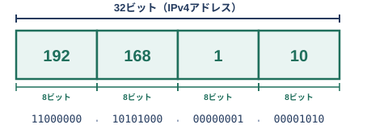
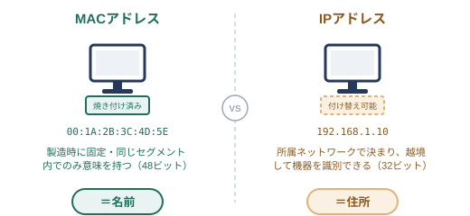
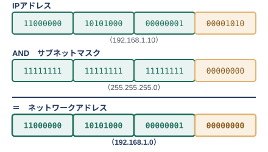
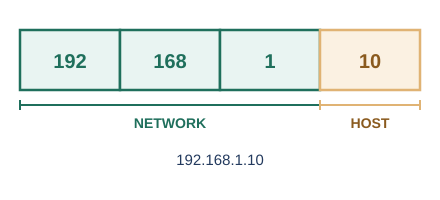
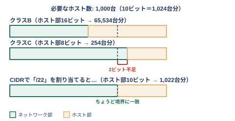
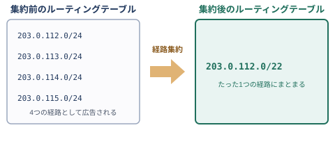
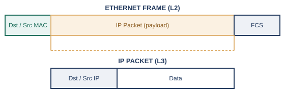
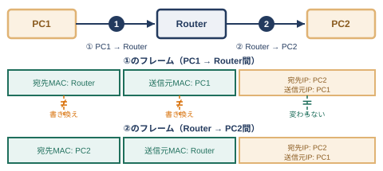

序章の終盤で、組織を越えてネットワーク同士をつなぐために、IPアドレスとルータが登場する様子を見てきました。IPアドレス（IPv4アドレス）は32ビットの数値で、8ビットずつ4つに区切り、それぞれを10進数にして.（ドット）でつないだ形（例: 192.168.1.10）で表記します。普段目にする192.168.1.10という表記は、あくまで人間が読みやすくするための10進数表現で、実体は32個の0と1が並んだ、ただの2進数の数値です。第1章1.5節で見た2進数11000000（16進数C0）は、実は10進数にすると192、つまりこのIPアドレスの先頭8ビットとまったく同じ並びです。

MACアドレスとの違いを整理しておきましょう。MACアドレスは、機器が製造された時点で焼き付けられる固定の識別子で、同じ配線・同じセグメントの中でしか意味を持ちません。これに対してIPアドレスは、機器がどのネットワークに所属しているかに応じて割り当てられる、住所のような階層的な番号です。引っ越しをすれば住所（IPアドレス）は変わりますが、個人を示す名前（MACアドレス相当のもの）は変わらない、というイメージに近いかもしれません。

社内LANでよく見かける192.168.x.xや10.x.x.xといったアドレスは、この予約されたプライベートIPアドレスの範囲を使っている、というわけです。
ここで紹介した「グローバルIPアドレス」には、「パブリックIPアドレス」という、もう1つの呼び方もあります。「世界で重複しない」という性質に注目すればグローバル、「プライベート（私的）」の対義語としての「パブリック（公開）」に注目すればパブリック、というように、どちらの呼び方にもそれぞれ理由があります。クラウドの管理画面（Azure、AWSなど）では「パブリックIPアドレス」という表記が一般的なので、実務ではこちらの呼び方に出会う機会も多いはずです。本書では、以降もグローバルIPアドレスという呼び方で統一しますが、どちらで呼ばれても戸惑わないよう、2つとも覚えておくとよいでしょう。
IPアドレスの32ビットは、そのまま全体が1台の機器を指すわけではありません。前半の一部が「どのネットワークに属しているか」を表すネットワーク部、残りが「そのネットワークの中の何番目の機器か」を表すホスト部として使われます。この境界線がどこにあるかを示すのが、サブネットマスクです。
サブネットマスクの正体は、IPアドレスと同じ32ビットの数値です。255.255.255.0のように、IPアドレスと並べて設定します。第1章1.5節で「後の章で登場する」と予告した255（2進数11111111、16進数FF）は、まさにこのサブネットマスクに登場する値です。2進数で見ると11111111.11111111.11111111.00000000のように、1が並ぶ部分と0が並ぶ部分からできており、1の範囲がネットワーク部、0の範囲がホスト部に対応します。
「マスク」という名前は、この数値の使い方に由来します。IPアドレスとサブネットマスクを、ビットごとにAND演算（両方とも1のときだけ結果が1になる、掛け算のような演算）すると、マスクが0になっているホスト部のビットは強制的に0になり（覆い隠され＝マスクされ）、マスクが1になっているネットワーク部のビットだけがそのまま残ります。この演算によって、IPアドレスからネットワーク部だけを取り出せる、というわけです。

このAND演算の結果を、普段よく目にする10進数表記で描き直すと、次のようになります。

同じネットワーク部を持つ機器同士は、間にルータを挟まずに直接やり取りできる「同じネットワークの中」にいる、とみなされます。1つの大きなネットワークを、部署やフロアといった単位でいくつかの小さなネットワークに分割したいとき、ホスト部の一部をさらにネットワーク部として使うことで、より細かいネットワークに区切ることができます。この分割作業を、サブネッティングと呼びます。細かく分割すればするほど、1つのネットワークに含まれる機器の台数は減っていきます。これは、第3章で見たブロードキャストドメインの範囲を、意図的に小さく保つ効果にもつながります。
ここまでは、サブネットマスクを自分たちの都合で自由に決められる前提で話を進めてきました。しかし、インターネットの黎明期には、ネットワーク部の長さは組織ごとに自由に決められるものではなく、「クラス」と呼ばれる3種類の固定長のどれかに、IPアドレスの先頭数ビットのパターンに応じて機械的に当てはめられていました※2。この仕組みを、クラスフルアドレッシングと呼びます。
先頭オクテットを2進数で見比べると、クラスを分ける仕組みの設計意図が見えてきます。クラスAは0xxxxxxx、クラスBは10xxxxxx、クラスCは110xxxxx、クラスDは1110xxxx、クラスEは1111xxxxと、先頭に並ぶ1の個数がクラスごとに1つずつ増えていきます。最初に0が現れるビットの位置も、クラスAは1桁目、クラスBは2桁目、クラスCは3桁目、クラスDは4桁目と、見事に1桁ずつ後ろにずれていきます（クラスEだけは目印ビットの4ビットすべてが1で、0が現れません）。この「目印ビット」が1ビット長くなるたびに、残りの可変部分は1ビットずつ短くなるため、各クラスが使えるアドレス空間は、クラスAから順に残りの空間の半分ずつに切り出されていきます。クラスDとクラスEは、ともに4ビットの目印（1110と1111）を使う同じ長さなので、2つで最後に残った領域をちょうど半分に分け合う形になっています。クラスDが専用に予約されているマルチキャストとは、1台の送信元から、特定の複数の相手へ同時に同じデータを届ける通信方式のことです。
なお、クラスAの先頭オクテットは0xxxxxxxなので原理上は0〜127ですが、0は「このネットワーク自身」を指す特殊な値、127はループバック用に予約されているため、表の範囲は実際に割り当て可能な1〜126としています。
社内LANで見かける192.168.x.xが、常に先頭24ビットまでがネットワーク部（クラスC相当）であるのは、このクラスフルアドレッシングの名残です。
しかし、この仕組みには大きな弱点がありました。たとえば1,000台の機器を持つ組織があったとします。クラスBを1つ割り当てれば65,534台分の余裕があり無駄が多すぎますが、クラスCを1つだけ割り当てると254台分しかなく足りません。結局、複数のクラスCをかき集めて使う、というようなことが起こり、無駄なアドレス消費と、細切れになった経路情報によるインターネット全体のルーティングテーブルの肥大化を招いていました。
4.2節で見たクラスフルアドレッシングの「3種類の固定長からしか選べない」という制約を取り払い、ネットワーク部の長さを1ビット単位で自由に決められるようにしたのが、CIDR（Classless Inter-Domain Routing）という表記法です※3。先ほどの1,000台の組織の例でいえば、クラスの枠に縛られず「/22」（ホスト部が10ビットなので、2の10乗から2を引いた1,022台分）というちょうどよい大きさを割り当てられるようになり、無駄なアドレス消費が大幅に減りました。

表記そのものはシンプルで、サブネットマスクのうち、先頭から1が何ビット連続しているかを、/に続けて書くだけです。たとえば255.255.255.0は、4.2節で見たとおり2進数で11111111.11111111.11111111.00000000、つまり先頭から24ビットが1なので、/24と表記します。
この表記のおかげで、組織の規模に合わせて必要な分だけのアドレス空間を無駄なく割り当てられるようになっただけでなく、連続する複数のネットワークをまとめて1つの経路として広告できるようにもなりました（経路集約）。たとえば203.0.112.0/24から203.0.115.0/24までの4つの連続したネットワークは、203.0.112.0/22という1つの経路にまとめて広告できます。

この経路集約により、インターネット全体のルーティングテーブルの肥大化も抑えられるようになりました。4つの経路を別々に覚えておく代わりに、1つの経路だけを覚えておけばよいからです。
インターネットのどこかにある、見てみたいWebサイトにアクセスしたい、ということがあるでしょう。けれど、インターネット上に存在する無数の宛先それぞれについて、「そこへはどの経路で届ければよいか」を機器自身があらかじめ全部知っておくことなど、現在のネットワークの数を考えれば到底できません。
では、どうすればよいのでしょうか。ある機器が通信をしようとするとき、宛先のIPアドレスが自分と同じネットワーク部を持っていれば、直接やり取りできます。しかし、宛先が別のネットワークに属している場合、その機器は「ここから先、どうやって届ければよいか」を自分では判断できません。
そこで、「宛先がわからないときは、とりあえずここへ送っておけばよい」という、困ったときのための宛先をあらかじめ1つ決めておく、という発想が生まれました。あらかじめ設定しておいた、自分のネットワークの出入り口となる機器（多くの場合ルータ）に、その通信を丸ごと預けてしまえばよいのです。この「困ったときの宛先」の役割を果たす機器のIPアドレスを、デフォルトゲートウェイと呼びます。
序章で見た「よそのネットワークともつながりたい」という欲求と、それに応えるルータの役割は、まさにこのデフォルトゲートウェイという形で、日々の通信の中に現れています。
第3章で見たイーサネットフレームと、この章で見たIPパケットは、別々の層のものですが、実際にはIPパケットがまるごとイーサネットフレームの中身（ペイロード）として運ばれる、という入れ子の関係になっています。

ここで疑問が浮かびます。送信したい相手のIPアドレスはわかっていても、フレームの宛先には本来MACアドレスを書く必要があります。IPアドレスから、対応するMACアドレスをどうやって知ればよいのでしょうか。
この「IPアドレスから、対応するMACアドレスを問い合わせる」役割を果たすのが、ARP（Address Resolution Protocol）という仕組みです。1982年にRFC 826として標準化されており※4、同じネットワークの中に向けて「このIPアドレスを持っているのは誰ですか」と問いかけ、該当する機器が自分のMACアドレスを返答する、という手順になっています。宛先が別のネットワークにある場合は、4.4節で見たデフォルトゲートウェイのIPアドレスに対してこのARPを行い、得られたMACアドレスを最初のフレームの宛先MACアドレスとして使います。ARPの具体的な手順は第7章で改めて扱います。
ここで押さえておきたいのは、通信の最初から最後まで、宛先のIPアドレスはずっと変わらない一方、フレームの宛先MACアドレスは、ルータを1つ越えるたびに「次にどの機器へ渡すか」に応じて書き換えられる、という点です。IPアドレスが旅全体の最終目的地を、MACアドレスがそのときどきの「次の1歩」を指し示している、と考えると、両者の役割の違いがつかみやすくなります。
